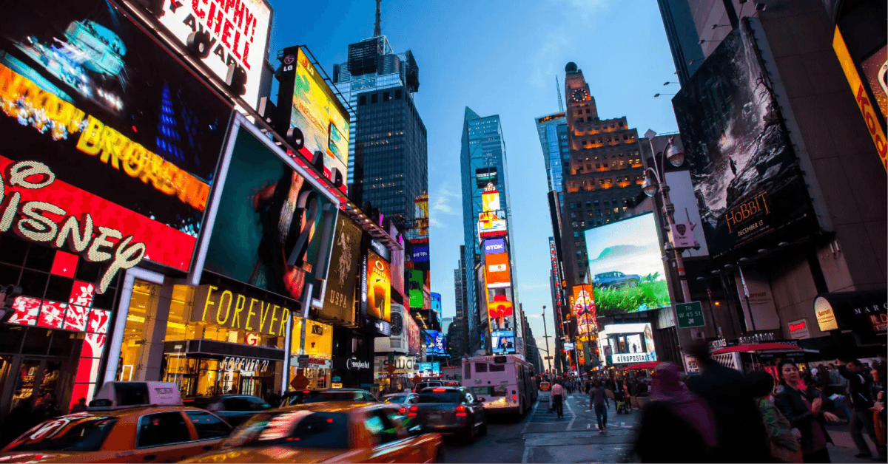

United States

Below you will see the three main tourist spots in the USA and their curiosities.
Below you will see the three main tourist spots in the USA and their curiosities.
The United States is the third most visited country by international tourists in the world, behind Spain and France. Being promoted only by the local and state government, it has no federal influence.
Located in New York. With a constant flow of people, great brands present and having several films recorded in this place, it is iconic for the United States, being the most visited when going to this city.The place has, since 2015, a high definition digital mega screen, with 24 million LED lamps, in which it is possible to view images perfectly in any light condition, almost the size of a football field.
The entire huge Disney World complex that is located in Orlando, Florida, is the one that is most faithful to our imagination: parks and more parks where the enchanted world is so well produced that you completely forget about the world outside. huge shopping complex, with several outlets, malls, hypermarkets and specialized stores, being one of the main tourist spots that Brazilians visit.

The White House is the ultimate symbol of American politics and conveys the idea of what it is like to tour in the capital of the United States. The president's home in Washington DC is right in the way of those who live there and also many tourists. The White House cannot be visited, but it is impossible not to spend a few minutes looking over there with some curiosity and admiration.